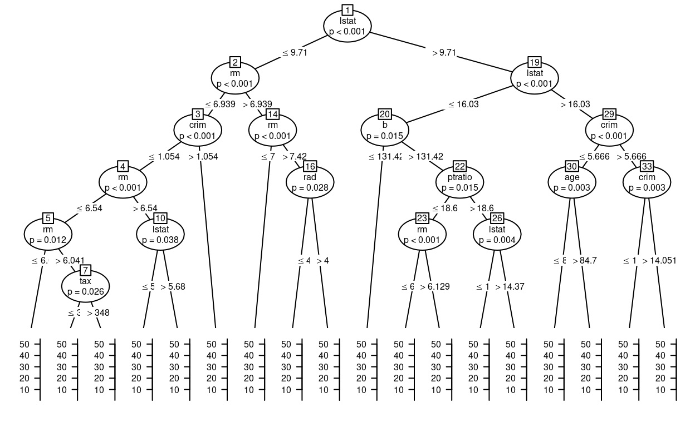
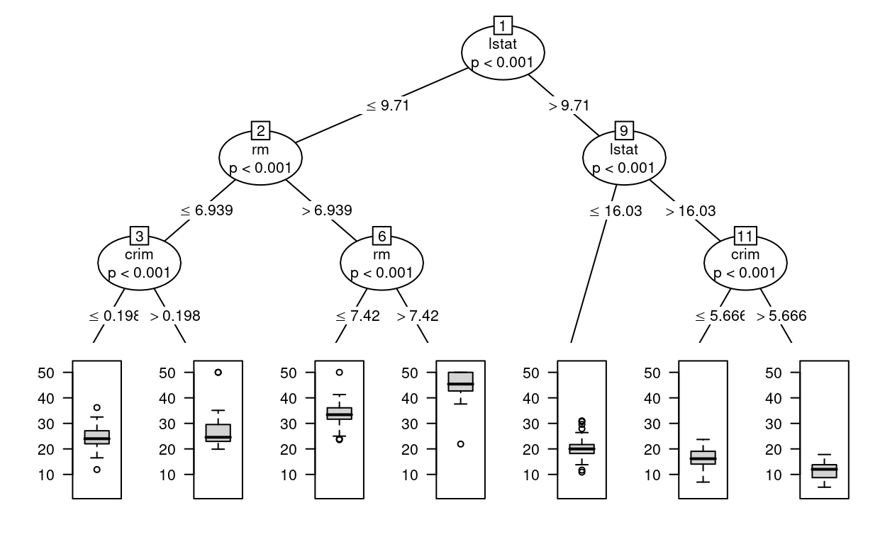
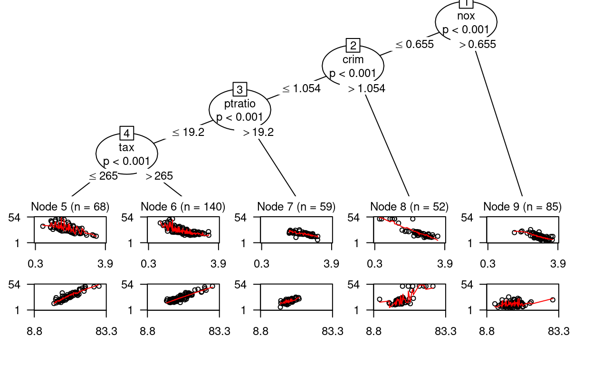
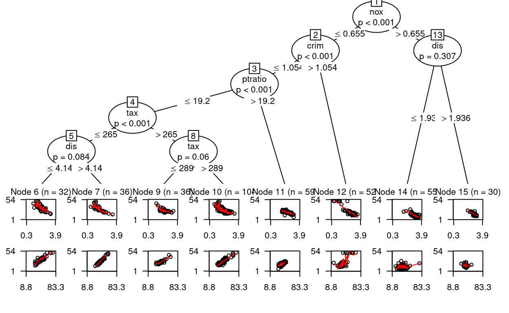

library(mlbench)
library(partykit)
library(strucchange)
library(caret)In this notebook, we use the Boston Housing data set (again). “This dataset contains information collected by the U.S Census Service concerning housing in the area of Boston Mass. It was obtained from the StatLib archive (http://lib.stat.cmu.edu/datasets/boston), and has been used extensively throughout the literature to benchmark algorithms.”
Source: https://www.cs.toronto.edu/~delve/data/boston/bostonDetail.html
data(BostonHousing2)
head(BostonHousing2)names(BostonHousing2)## [1] "town" "tract" "lon" "lat" "medv" "cmedv" "crim"
## [8] "zn" "indus" "chas" "nox" "rm" "age" "dis"
## [15] "rad" "tax" "ptratio" "b" "lstat"We start by splitting the data into a training and test set with sample.
set.seed(7345)
train <- sample(1:nrow(BostonHousing2), 0.8*nrow(BostonHousing2))
boston_train <- BostonHousing2[train,]
boston_test <- BostonHousing2[-train,]In order to grow a conditional inference tree, we use the ctree function. We begin with the default setup and plot the resulting object.
ct1 <- ctree(medv ~ . - town - tract - cmedv,
data = boston_train)
ct1##
## Model formula:
## medv ~ lon + lat + crim + zn + indus + chas + nox + rm + age +
## dis + rad + tax + ptratio + b + lstat
##
## Fitted party:
## [1] root
## | [2] lstat <= 9.71
## | | [3] rm <= 6.939
## | | | [4] crim <= 1.05393
## | | | | [5] rm <= 6.54
## | | | | | [6] rm <= 6.041: 20.094 (n = 18, err = 103.4)
## | | | | | [7] rm > 6.041
## | | | | | | [8] tax <= 348: 24.027 (n = 44, err = 298.3)
## | | | | | | [9] tax > 348: 21.429 (n = 7, err = 39.4)
## | | | | [10] rm > 6.54
## | | | | | [11] lstat <= 5.68: 29.559 (n = 17, err = 154.8)
## | | | | | [12] lstat > 5.68: 26.552 (n = 25, err = 158.5)
## | | | [13] crim > 1.05393: 31.900 (n = 7, err = 925.8)
## | | [14] rm > 6.939
## | | | [15] rm <= 7.42: 33.571 (n = 35, err = 816.3)
## | | | [16] rm > 7.42
## | | | | [17] rad <= 4: 43.871 (n = 7, err = 104.8)
## | | | | [18] rad > 4: 45.069 (n = 16, err = 781.6)
## | [19] lstat > 9.71
## | | [20] lstat <= 16.03
## | | | [21] b <= 131.42: 15.857 (n = 7, err = 102.7)
## | | | [22] b > 131.42
## | | | | [23] ptratio <= 18.6
## | | | | | [24] rm <= 6.129: 20.503 (n = 32, err = 239.3)
## | | | | | [25] rm > 6.129: 24.460 (n = 10, err = 180.4)
## | | | | [26] ptratio > 18.6
## | | | | | [27] lstat <= 14.37: 20.338 (n = 50, err = 232.8)
## | | | | | [28] lstat > 14.37: 17.129 (n = 14, err = 38.5)
## | | [29] lstat > 16.03
## | | | [30] crim <= 5.66637
## | | | | [31] age <= 84.7: 20.233 (n = 9, err = 91.5)
## | | | | [32] age > 84.7: 15.964 (n = 47, err = 397.7)
## | | | [33] crim > 5.66637
## | | | | [34] crim <= 14.0507: 12.964 (n = 39, err = 284.2)
## | | | | [35] crim > 14.0507: 8.850 (n = 20, err = 125.1)
##
## Number of inner nodes: 17
## Number of terminal nodes: 18plot(ct1, gp = gpar(fontsize = 6), tp_args = list(mainlab=""))
In order to get a somewhat smaller tree (which is hopefully easier to plot), we can set higher thresholds for splitting a node and also adjust tree depth.
ct2 <- ctree(medv ~ . - town - tract - cmedv,
data = boston_train,
mincriterion = 0.999, # 1-p threshold for splitting
minbucket = 20, # min number of observations per node
maxdepth = 3) # max tree depth
ct2##
## Model formula:
## medv ~ lon + lat + crim + zn + indus + chas + nox + rm + age +
## dis + rad + tax + ptratio + b + lstat
##
## Fitted party:
## [1] root
## | [2] lstat <= 9.71
## | | [3] rm <= 6.939
## | | | [4] crim <= 0.19802: 24.533 (n = 94, err = 1400.5)
## | | | [5] crim > 0.19802: 27.183 (n = 24, err = 1455.7)
## | | [6] rm > 6.939
## | | | [7] rm <= 7.42: 33.571 (n = 35, err = 816.3)
## | | | [8] rm > 7.42: 44.704 (n = 23, err = 893.3)
## | [9] lstat > 9.71
## | | [10] lstat <= 16.03: 20.074 (n = 113, err = 1241.3)
## | | [11] lstat > 16.03
## | | | [12] crim <= 5.66637: 16.650 (n = 56, err = 626.8)
## | | | [13] crim > 5.66637: 11.569 (n = 59, err = 633.1)
##
## Number of inner nodes: 6
## Number of terminal nodes: 7plot(ct2, gp = gpar(fontsize = 8), tp_args = list(mainlab=""))
The sctest function is useful to get a better understanding of how the tree was grown. It lists the results of the permutation tests for each node.
sctest(ct2)## $`1`
## lon lat crim zn indus
## statistic 4.231800e+01 0.5349822 6.258901e+01 4.300729e+01 9.515652e+01
## p.value 1.163629e-09 0.9999147 3.820062e-14 8.180451e-10 2.638679e-21
## chas nox rm age dis
## statistic 9.36708738 7.608321e+01 2.091162e+02 4.963845e+01 2.291381e+01
## p.value 0.03262987 4.079389e-17 3.212082e-46 2.772823e-11 2.541423e-05
## rad tax ptratio b lstat
## statistic 6.993380e+01 9.826895e+01 1.157638e+02 4.748809e+01 2.256314e+02
## p.value 9.199282e-16 5.478732e-22 8.031366e-26 8.300851e-11 8.020428e-50
##
## $`2`
## lon lat crim zn indus chas
## statistic 13.314906753 0.6354861 13.647931719 0.1018622 0.6301267 9.68477141
## p.value 0.003942295 0.9997539 0.003302161 1.0000000 0.9997662 0.02751064
## nox rm age dis rad tax
## statistic 9.79590759 1.099802e+02 17.180068312 2.278279e+01 5.7086770 0.5342307
## p.value 0.02591632 1.484644e-24 0.000509856 2.720705e-05 0.2253783 0.9999154
## ptratio b lstat
## statistic 3.107845e+01 2.5474334 6.382296e+01
## p.value 3.717109e-07 0.8272641 2.041763e-14
##
## $`3`
## lon lat crim zn indus chas
## statistic 5.1950403 0.3912650 3.031414e+01 0.1761023 1.8308964 11.886017593
## p.value 0.2908433 0.9999886 5.511572e-07 1.0000000 0.9452056 0.008450034
## nox rm age dis rad tax
## statistic 2.0699802 2.928953e+01 3.2020429 9.65416295 2.450924e+01 5.4886662
## p.value 0.9129896 9.349743e-07 0.6820525 0.02796673 1.109310e-05 0.2516506
## ptratio b lstat
## statistic 2.329569 2.8857707 14.595062624
## p.value 0.869478 0.7544368 0.001997085
##
## $`4`
## NULL
##
## $`5`
## NULL
##
## $`6`
## lon lat crim zn indus chas
## statistic 0.3888613 0.00694544 0.4028103 0.4457839 1.9694467 0.3821196
## p.value 0.9999890 1.00000000 0.9999861 0.9999732 0.9275131 0.9999902
## nox rm age dis rad tax
## statistic 2.7372335 1.760084e+01 2.7989831 5.0150342 0.4810811 0.7327604
## p.value 0.7872596 4.086243e-04 0.7737482 0.3173265 0.9999564 0.9994263
## ptratio b lstat
## statistic 8.71348182 0.6482492 11.823676263
## p.value 0.04634641 0.9997226 0.008736521
##
## $`7`
## NULL
##
## $`8`
## NULL
##
## $`9`
## lon lat crim zn indus chas
## statistic 1.671868e+01 2.3978626 6.370850e+01 6.7114248 3.665811e+01 5.0564923
## p.value 6.500823e-04 0.8567423 2.163914e-14 0.1344485 2.111580e-08 0.3110573
## nox rm age dis rad
## statistic 4.390107e+01 4.2397919 4.742397e+01 2.531454e+01 4.977356e+01
## p.value 5.180994e-10 0.4535522 8.576859e-11 7.305311e-06 2.588305e-11
## tax ptratio b lstat
## statistic 6.123019e+01 3.103603e+01 2.889567e+01 9.946669e+01
## p.value 7.616518e-14 3.799236e-07 1.145754e-06 2.992360e-22
##
## $`10`
## lon lat crim zn indus chas
## statistic 8.03117900 0.1472208 10.4045762 0.2513234 4.3662017 0.2675198
## p.value 0.06679221 1.0000000 0.0186905 0.9999994 0.4289117 0.9999991
## nox rm age dis rad tax ptratio
## statistic 2.6026771 1.4455727 2.8179726 0.15662 3.0371252 6.9444810 10.51346992
## p.value 0.8158884 0.9798725 0.7695527 1.00000 0.7200767 0.1189585 0.01762942
## b lstat
## statistic 10.77901055 8.47371269
## p.value 0.01528847 0.05270516
##
## $`11`
## lon lat crim zn indus chas
## statistic 6.8865136 4.6082522 3.498359e+01 1.5500251 10.82775689 14.264511416
## p.value 0.1226434 0.3843242 4.987443e-08 0.9725507 0.01489393 0.002379825
## nox rm age dis rad
## statistic 2.224360e+01 1.4654305 13.969944860 2.102674e+01 2.393740e+01
## p.value 3.602307e-05 0.9785937 0.002782726 6.793567e-05 1.492784e-05
## tax ptratio b lstat
## statistic 2.980770e+01 8.1350052 8.04020711 1.963446e+01
## p.value 7.156395e-07 0.0631854 0.06647069 1.406346e-04
##
## $`12`
## NULL
##
## $`13`
## NULLIn model-based recursive partitioning, we begin with a prespecified model and define a set of partitioning variables. Here we follow the example of the partykit vignette.
https://cran.r-project.org/web/packages/partykit/vignettes/mob.pdf
tree1 <- lmtree(medv ~ log(lstat) + I(rm^2) |
zn + indus + chas + nox + age + dis + rad + tax + crim + b + ptratio,
data = boston_train,
verbose = TRUE)##
## -- Node 1 ---------------------------------
## Number of observations: 404
##
## Parameter instability tests:
## zn indus chas nox age
## statistic 2.974164e+01 7.027228e+01 2.193377e+01 9.086082e+01 3.550543e+01
## p.value 6.499666e-04 1.069740e-12 7.406746e-04 2.482002e-17 4.137136e-05
## dis rad tax crim b
## statistic 5.417700e+01 8.943984e+01 8.913332e+01 8.934208e+01 4.074967e+01
## p.value 3.941236e-09 5.206504e-17 6.108296e-17 5.478659e-17 3.204056e-06
## ptratio
## statistic 6.300994e+01
## p.value 4.429860e-11
##
## Best splitting variable: nox
## Perform split? yes
## Selected split: <= 0.655 | > 0.655
##
## -- Node 2 ---------------------------------
## Number of observations: 319
##
## Parameter instability tests:
## zn indus chas nox age
## statistic 16.8890221 4.300407e+01 2.549468e+01 4.098774e+01 3.566411e+01
## p.value 0.1889405 1.062252e-06 1.338409e-04 2.871622e-06 3.859547e-05
## dis rad tax crim b
## statistic 4.910355e+01 4.328513e+01 4.569381e+01 4.928032e+01 18.3052555
## p.value 5.099578e-08 9.243843e-07 2.797769e-07 4.667400e-08 0.1087657
## ptratio
## statistic 4.770353e+01
## p.value 1.027255e-07
##
## Best splitting variable: crim
## Perform split? yes
## Selected split: <= 1.05393 | > 1.05393
##
## -- Node 3 ---------------------------------
## Number of observations: 267
##
## Parameter instability tests:
## zn indus chas nox age dis
## statistic 13.3582525 25.541178885 12.12692303 9.170849 18.5475424 14.5101250
## p.value 0.5647375 0.004276444 0.07395862 0.984314 0.0926372 0.4081224
## rad tax crim b ptratio
## statistic 12.9250411 3.909299e+01 18.1304195 5.9323007 4.148409e+01
## p.value 0.6273375 6.591504e-06 0.1097419 0.9999993 2.031140e-06
##
## Best splitting variable: ptratio
## Perform split? yes
## Selected split: <= 19.2 | > 19.2
##
## -- Node 4 ---------------------------------
## Number of observations: 208
##
## Parameter instability tests:
## zn indus chas nox age dis
## statistic 11.229973 16.3342585 5.6710717 20.7139864 8.8307633 21.32474148
## p.value 0.811734 0.1877912 0.7804512 0.0297877 0.9847568 0.02265297
## rad tax crim b ptratio
## statistic 12.8857866 3.414821e+01 15.5260946 6.0582767 21.1252888
## p.value 0.5800384 4.925917e-05 0.2539324 0.9999935 0.0247795
##
## Best splitting variable: tax
## Perform split? yes
## Selected split: <= 265 | > 265
##
## -- Node 5 ---------------------------------
## Number of observations: 68
##
## Parameter instability tests:
## zn indus chas nox age dis
## statistic 4.9056390 14.0418388 1.1397076 11.9978370 11.255685 14.82940797
## p.value 0.9953219 0.1154255 0.9999999 0.2526893 0.327784 0.08380598
## rad tax crim b ptratio
## statistic 5.2100164 8.9509241 6.1638978 4.2317308 12.2649729
## p.value 0.9911429 0.6420343 0.9589821 0.9992027 0.2292377
##
## Best splitting variable: dis
## Perform split? no
##
## -- Node 6 ---------------------------------
## Number of observations: 140
##
## Parameter instability tests:
## zn indus chas nox age dis
## statistic 7.5362426 12.2709845 9.1766081 9.6260145 15.8349937 10.418992
## p.value 0.9951008 0.5747897 0.2602568 0.9095635 0.1796751 0.829733
## rad tax crim b ptratio
## statistic 6.3615373 18.54554465 11.1115177 7.2447439 16.1287808
## p.value 0.9997555 0.05991724 0.7412672 0.9973679 0.1604782
##
## Best splitting variable: tax
## Perform split? no
##
## -- Node 7 ---------------------------------
## Number of observations: 59
## Too few observations, stop splitting (minsize = 30)
##
## -- Node 8 ---------------------------------
## Number of observations: 52
## Too few observations, stop splitting (minsize = 30)
##
## -- Node 9 ---------------------------------
## Number of observations: 85
##
## Parameter instability tests:
## zn indus chas nox age dis rad
## statistic 0 4.0880824 0.8345928 7.9254599 2.030444 12.6961687 7.2246802
## p.value NA 0.9999867 1.0000000 0.9115602 1.000000 0.3070139 0.9586444
## tax crim b ptratio
## statistic 7.2246802 12.1893505 2.331209 7.2246802
## p.value 0.9586444 0.3625382 1.000000 0.9586444
##
## Best splitting variable: dis
## Perform split? noplot(tree1, gp = gpar(fontsize = 9))
A brief summary of the model-based tree.
tree1## Linear model tree
##
## Model formula:
## medv ~ log(lstat) + I(rm^2) | zn + indus + chas + nox + age +
## dis + rad + tax + crim + b + ptratio
##
## Fitted party:
## [1] root
## | [2] nox <= 0.655
## | | [3] crim <= 1.05393
## | | | [4] ptratio <= 19.2
## | | | | [5] tax <= 265: n = 68
## | | | | (Intercept) log(lstat) I(rm^2)
## | | | | 2.5511422 -2.8809561 0.7335316
## | | | | [6] tax > 265: n = 140
## | | | | (Intercept) log(lstat) I(rm^2)
## | | | | -0.7012976 -0.7700900 0.6558100
## | | | [7] ptratio > 19.2: n = 59
## | | | (Intercept) log(lstat) I(rm^2)
## | | | 19.2425270 -5.1646802 0.3348568
## | | [8] crim > 1.05393: n = 52
## | | (Intercept) log(lstat) I(rm^2)
## | | 49.7031415 -13.6991819 0.1865616
## | [9] nox > 0.655: n = 85
## | (Intercept) log(lstat) I(rm^2)
## | 52.7008704 -11.9031977 -0.1083862
##
## Number of inner nodes: 4
## Number of terminal nodes: 5
## Number of parameters per node: 3
## Objective function (residual sum of squares): 4334.23A more detailed summary of the model in node 1 (root node).
summary(tree1, node = 1)##
## Call:
## lm(formula = medv ~ log(lstat) + I(rm^2))
##
## Residuals:
## Min 1Q Median 3Q Max
## -19.2814 -2.8167 -0.4815 2.2844 27.2309
##
## Coefficients:
## Estimate Std. Error t value Pr(>|t|)
## (Intercept) 29.92461 2.42545 12.338 <2e-16 ***
## log(lstat) -9.01564 0.51758 -17.419 <2e-16 ***
## I(rm^2) 0.34084 0.03528 9.661 <2e-16 ***
## ---
## Signif. codes: 0 '***' 0.001 '**' 0.01 '*' 0.05 '.' 0.1 ' ' 1
##
## Residual standard error: 4.663 on 401 degrees of freedom
## Multiple R-squared: 0.7376, Adjusted R-squared: 0.7363
## F-statistic: 563.7 on 2 and 401 DF, p-value: < 2.2e-16Model coefficients for all terminal nodes.
coef(tree1) ## (Intercept) log(lstat) I(rm^2)
## 5 2.5511422 -2.880956 0.7335316
## 6 -0.7012976 -0.770090 0.6558100
## 7 19.2425270 -5.164680 0.3348568
## 8 49.7031415 -13.699182 0.1865616
## 9 52.7008704 -11.903198 -0.1083862Extract log-Likehood and Information Criteria.
logLik(tree1)## 'log Lik.' -1025.574 (df=24)AIC(tree1)## [1] 2099.148BIC(tree1)## [1] 2195.182Now, lets grow a larger tree by adjusting the lmtree arguments.
tree2 <- lmtree(medv ~ log(lstat) + I(rm^2) |
zn + indus + chas + nox + age + dis + rad + tax + crim + b + ptratio,
data = boston_train,
alpha = 0.5, # default significance level = 0.05
minsize = NULL, # default: min. (10*no. of parameters) observations per node
maxdepth = Inf) # default: Infinity
plot(tree2, gp = gpar(fontsize = 8))
We can also have a look at the AIC from both trees.
AIC(tree1)## [1] 2099.148AIC(tree2)## [1] 2067.714Finally, CTREE and MOB results can also be used for prediction.
y_ct1 <- predict(ct1, newdata = boston_test)
y_ct2 <- predict(ct2, newdata = boston_test)
y_tree1 <- predict(tree1, newdata = boston_test)
y_tree2 <- predict(tree2, newdata = boston_test)Lets see how well our conditional inference trees and model-based trees are able to predict the outcome in the test set. This time we use postResample to quickly get some useful performance metrics.
postResample(pred = y_ct1, obs = boston_test$medv)## RMSE Rsquared MAE
## 4.6812116 0.7749252 3.0951101postResample(pred = y_ct2, obs = boston_test$medv)## RMSE Rsquared MAE
## 5.1072887 0.7350706 3.2857464postResample(pred = y_tree1, obs = boston_test$medv)## RMSE Rsquared MAE
## 4.3901573 0.8026794 2.6445962postResample(pred = y_tree2, obs = boston_test$medv)## RMSE Rsquared MAE
## 4.4912556 0.7942724 2.8107492Note that with model-based recursive partitioning, we can also predict node membership.
y_tree2n <- predict(tree1, newdata = boston_test, type = "node")
table(y_tree2n)## y_tree2n
## 5 6 7 8 9
## 16 34 17 14 21